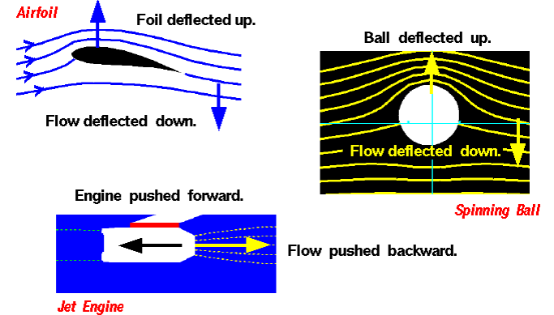
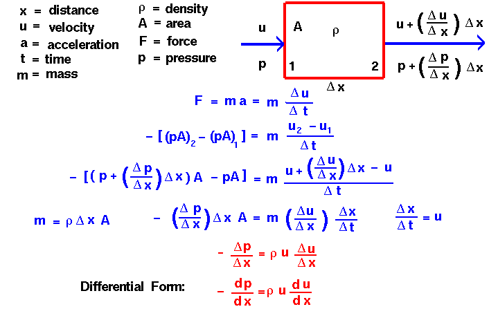
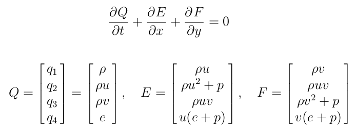
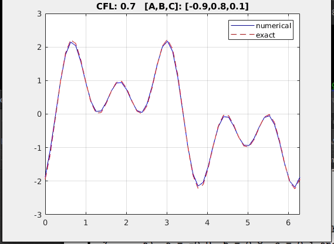
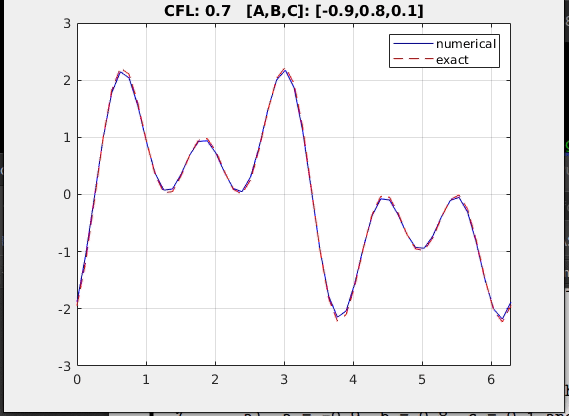

Fluid Mechanics - Part 1
Phases of Matter
The motion of fluids and the reaction to external forces are described by the Navier-Stokes Equations, which express a conservation of mass, momentum, and energy. The motion of solids and the reaction to external forces are described by Newton's Laws of Motion.
When studying gases , we can investigate the motions and interactions of individual molecules, or we can investigate the large scale action of the gas as a whole. Scientists refer to the large scale motion of the gas as the macro scale and the individual molecular motions as the micro scale. Some phenomenon are easier to understand and explain based on the macro scale, while other phenomenon are more easily explained on the micro scale. Macro scale investigations are based on things that we can easily observe and measure. But micro scale investigations are based on rather simple theories because we cannot actually observe an individual gas molecule in motion. Macro scale and micro scale investigations are just two views of the same thing.
A plasma is a fluid, like a liquid or gas, but because of the charged particles present in a plasma, it responds to and generates electro-magnetic forces. There are fluid dynamic equations, called the Boltzman equations, which include the electro-magnetic forces with the normal fluid forces of the Navier-Stokes equations.
Netwon's Third Law

Conservation of Momentum
The conservation of momentum states that, within some problem domain, the amount of momentum remains constant; momentum is neither created nor destroyed, but only changed through the action of forces as described by Newton's laws of motion.
Let us consider a very very simplified flow problem to show the implementation of Conservation of Momentum. Suppose the steady flow of fluid through a domain in which flow properties only change in one direction, x. Assuming density remains constant, the area through which the fluid flows remains constant, and the force is limited to only pressure.
This results in a one dimensional, steady form of Euler's Equation, where the pressure drop of a fluid is proportional to both the value of the velocity and the velocity gradient. Interestingly, a solution of this momentum equation gives us the form of the dynamic pressure that appears in Bernoulli's Equation.

1D Navier-Stokes equations
The Navier-Stokes equations form a coupled system of nonlinear PDE's describing the conservation of mass, momentum and energy for a fluid. For a Newtonian fluid in one dimension, they can be written rs:

Notice (e) is the total energy per unit 'volume', (μ) is the coefficient of viscosity, and (κ) is the thermal conductivity. The total energy e includes internal energy per unit volume (ρ*u, u is the internal energy per unit mass) and kinetic energy per unit volume (0.5*ρ*u^2). These 3 equations must be supplemented by relations between μ, κ, and the fluid states, as well as the state equation (such as ideal gas law). The convective fluxes lead to the first derivative in space, while the vicous and heat conduction terms involve in the second derivative in space.
Euler Equations
If we neglect viscosity and heat conduction, the Euler equations are obtained. In 2D form, the Euler Equations are:

Numerical Solution of 1D Biconvection Problem
Here I wrote a matlab program: wave_1D.m to show the comparison of numberical solution and exact solution. Propagation speed a = 1, fluid domain: x = [0,2*pi], periodic BC: u(x=0,t) = u(x=2*pi,t), IC: u0(x) = sin(x). Using the 3 points differencing in space, and Explicit time differencing method, we get the difference equation (j is x, n is t):
CFL (Courant-Fridrichs-Lewy) is defind as: a* step_time/ step_x for this problem. It basically relate the step of time, propagation speed, and stpe of space.
Exact solution can be wrtten in 2 ways. 1) Using the initial condition u0(x), u(x,t) = u0(x-at). 2) In a gernal form that,

From this program, we can see the influence of CFL and the influence of different coefficients of the 3 points differencing in space (different combinatio of A,B,C). To have a constant shape form in this case, CFL = 1, A=-1, B=1, C=0.


 

Relation of 1D Wave Convection Model and Euler Equations
Euler equations form a hyperbolic system of PDEs. Other systems are Maxwell equations are also hyperbolic type. Many aspects of numerical methods for such systems can be understood by studying a 1D Wave Convection Model. But first, we need to re-write Euler Equations to a form similar to 1D Wave Convection Model.
Define a tensor matrix A (3x3) as the derirative of E respect to Q, and 'freezing' A matrix at a reference state A0. Next use the eigenvalues and eigenvectors of [A], we can 'decouple' the system into m number of scalar equations of the same form of 1D Wave Convection model. With w = inv(X)*u, the Euler equations can be written as, (X is the matrix of right eigenvectors, Λ is a diagonal matrix containing the eigenvalues.)

The elements of w are know as 'characteristic variables'. Each wi (i=1,2,3 ... m) satisfies the 1D Wave Convection Model with the propagation speen = corresponding eigenvalue of A. So, a hyperbolic system (Euler equations) has a solution given by the superposition of waves which can travel in either positive or negative directions at varying speeds. In addition, if any of the wi are divergent (unstable, going to infinity, inaccurate, etc), the qi will behave consistently with the wi.
The 1D Euler Euqations have the eigenvalues, or wave speeds, u, u+c, and u-c, where c = sqrt(γp/ρ) is the local speed of sound, and u is associated with the convection of the fluid. Therefore, in a supersonic flow, where |u| > c, all of the wave speeds have the same sign. In a subsonic flow, where |u| < c, wave speeds of both positive and negative sign are present, corresponding to the fact
that sound waves can travel upstream in a subsonic flow.
The signs of the eigenvalues of the matrix A are also important in determining suitable BCs. The characteristic variables each satisfy the linear convection equation with the wave speed given by the corresponding eigenvalue. Therefore, the boundary conditions can be specified accordingly. That is, characteristic variables associated with positive eigenvalues can be specified at the left boundary, which corresponds to inflow for these variables. Characteristic variables associated with negative eigenvalues can be specified at the right boundary, which is the inflow boundary for these variables. While other boundary condition treatments are possible, they must be consistent with this approach.
Reference
NASA Advanced Modeling and Simulation. https://www.nas.nasa.gov/publications/ams/2018/06-14-18.html